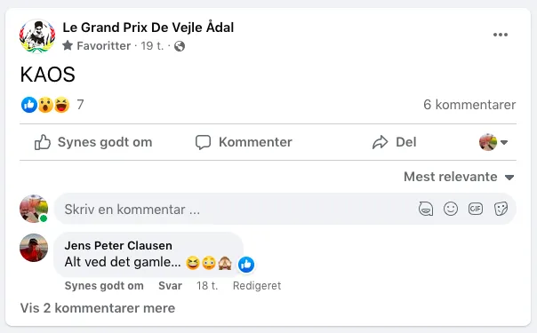

Le Grand Prix KAOS

Squadra Molteni vinder et Le Grand Prix Vejle de Ådal, der som det plejer, var præget af kaos og kærlighed.
Det er Tour de France år – og derfor havde Grand Prix Vejle Ådal ændret navn til Le Grand Prix Vejle de Ådal. Området foran den gamle Bindeballe Station var ændret til Le Village, med pop-up Tour de France kassevogn og pavillon med tilhørende sækkestole – og med Carsten Bagmand og Don Pelle var i jakkesæt.
Lad det være sagt med det samme: Folkene bag Grand Prix Vejle Ådal havde endnu engang gjort sig umage. De havde fået skabt et flot set-up, og de havde lagt alt deres kærlighed i at skabe et godt Le Grand Prix Vejle de Ådal.


Le Prologue
Efter velkomst og information på både jysk og sønderjysk, sod den på Le Prologue. En kort enkelstart på 7 km rundstrækning, der startede med en modvindsbakke på små 2 km. Herefter fulgte en sidesvindsstykke, der gik op og ned. Medvindsstykket var kort og hurtigt – og det sidste stykke mod mål var igen med sidevind og rullende bakker. Alt i alt en fantastisk hård rute.

Le Prologue blev vundet af Steffen Lyhne, Gios Brooklyn, foran Niels Bjørnsteen, Squadra Molteni og Jens Peter Clausen, Team Schrøder.
I klassen 1980′-1990’erne (cykler med pladehjul, aerobøjle eller STI greb) blev Le Prologue vundet af Jens Dirch, Team Banani, foran Peter Meinert, US Postal, og Peter Riis, Gios Brooklyn.
Le Prologue, Le Grand Prix Vejle de Ådal
Top 10 – 1980-1990’erne:
1. Jens Dirch, Team Banani 10:52
2. Peter Meinert, Squadra Molteni/US Postal 11:03
3. Peter Riis, Gios Brooklyn 11:19
4. Jørn Nielsen, Team K-Werk 11:38
5. Kristian Jensen, ONCE 11:48
Top 10 – 1970’erne:
1. Steffen Lyhne, Gios Brooklyn 11:08
2. Niels Bjørnsteen, Squadra Molteni 11:42
3. Jens Peter Clausen, Team Schrøder 11:49
4. Kasper Sørensen, Squadra Molteni 12:10
5. Lars Munch, Squadra Molteni 12:25
Kvinder:
1. Maria Winther/Else 21:55
DNS
1. Thomas Marker DNS

Efter Le Prologue var der en kort pause, hvor Le Grand Prix Vejle de Ådal bød på Le Sandwich og Le Cola i La Village.

Le Etape de Kaos
Kl. 13 blev der fløjtet til start til Le Etape. En etape på godt 50 km i Vejle Ådal. Le Bagmand informerede feltet om, at der på etapen var indlagt både grusstykker og bakkespurter – og at der skulle køres gentlemanrace mellem bakkespurterne.
Forrest ville Don Pelle køre løbsledelsesbilen, der også ville agerer masterbil. Bagerst ville Dan Bagmand køre fejeblad og servicebil. Derudover ville Jørn, Jørgen og Jan være vejkaptajner.
Og samtidig klarede det op – og solen brød frem. Alt var god, stemningen var god.

En time senere: Feltet har kun kørt små 15 km, og står på en bakketop lidt udenfor Vesterby. Der ventes endnu engang på én der har defekt. Det er 4. gang løbsledelsen stoppe løbet pga defekt i feltet. Efter 15 minutters venten bliver det vor meget for vejkaptajn Jørn. Han vender om og kører ned for at tjekke hvad der sker. Men Jørn komme aldrig igen…

– Jeg har ikke oplevet noget værre siden Tour de France 1998, hvor vi (hele Tour-feltet, red) sad 1,5 time på asfalten og strejkede, lød det fra Peter Meinert
Men yderligere 10 minutter efter kommer Jørgen slingrende op af bakken: Jørn er punkteret!
Feltet kører efter en lille halv time videre igen – og i samlet flok rammes første bakkespurt: Col de Fandensdal – 1000 m med gennemsnitlig stigning på 5,50% og max stigning på 10,50%.
Steffen Lyhne lægger ud som død og helvede – men han gå død inden mål og det bliver Jens Dirch, der løber med sejren.

– Jeg troede kun bakken var op til første sving, lød det fra en forpustet Steffen på toppen.
Efter opsamling køres der videre, med 500 meter senere skal der endnu engang ventes på en defekt…
Feltet kører lidt efter videre mod Engelsholm Slot. Men her er det så det går galt: Af endnu ukendte årsager, som løbsledelsen har nægtet at udtale sig om, kører Don Pelle i løbledelsesbilen afsted med ca. 45 km/t – og med Jens Dirch på pace bagved!
– På vej mod Engelsholm kører Don Pelle i førerbilen afsted med 45-50 km/t med Jens på bagsmækken. Jeg ligger sammen med ca 10-12 stykker i førerfeltet. Vi kunne næste ikke tro vores egne øjne. 2 km efter, hvor vi når til et kryds, er både førerbil og Jens pist væk – og vi ved ikke om vi skal til venstre, højre eller lige ud. Vi kører mod højre – og ender på en stor landevej mod Give, fortæller Kaptajn Bjørnsteen
Længere nede ligger Kasper Sørensen, der kan fortælle:
– Efter Engelsholm smutter Jens afsted (igen, red) og vinder bjergspurten.
Gruppettoen med mig i front kommer op efter Jens, som er er vendt om, og siger at vi nu er forrest. Derfor bliver jeg utroligt nok nummer 2 i den bjergspurt. Kort efter smutter Jens afsted igen. Denne gang foran løbledelsesbilen, der så må til at jagte ham…

Den kaotiske udvikling er også nået til GPVÅs HQ, der må gå på de sociale medier og bekende kulør:

Ved Randbøldal er der tilfældigvis sammensmeltning af de to felter. Hen her sker så det, at Don Pelle, endnu engang med Jens Dirch på bagsmækken kører forkert – og trækker godt halvdelen af feltet med sig. Gruppettoen kører en anden vej.

Midt på opløbsstrækningen står Don Pelle pludselig ved siden af løbsledelsesbilen og vifter med et flag. Ingen ved hvad det betyder – men spurten blev vist vundet af Peter Riis – og de næste placeringer mellem Claus Bech, Niels Bjørnsteen, Jens Peter Clausenskal skal der målfoto til at afgøre.
Bag lukkede døre
Tilbage i Le Village er har løbsledelsen trukket sig tilbage bag lukkede døre i et mørkt lokale. Inde fra lokalet kunne der bl.a. høres:
– Pelle: Det var dig, der skulle være vejkaptajn!
Jan: Ja, men jeg kan ikke være bagerst, i midten og forrest på samme tid!
Bagmanden: Hold nu kæft. Vi finder bare på en tilfældig afgørelse.
Og sådan blev det!
Men der var selvfølgelig ingen tvivl om, at Squadra Molteni vandt holdkonkurrencen.
Le Grand Prix Vejle de Ådal gjorde det igen: Der er ikke løb i nordeuropa med flere arrangører, vejkaptajner eller servicebiler pr rytter – og de formår alligevel at fucke det fuldstændigt op. Men der er ingen tvivl om, at arrangørgruppen hygger sig til deres rødvinssamlinger – og der er heller ikke nogen tvivl om, at til trods for det sædvanlige kaos, så er Le Grand Prix Vejle de Ådal fyld med kærlighed – kærlighed til vintagesporten.
Derfor skal Vejle Ådals svar på Blinkende Lygter – Le Grand Prix Vejle de Ådal -selvfølgelig have 5 stjerner: én ✸ for Bagmanden, én ✸ for Don Pelle, én✸ for Jørn, én ✸ for Jørgen og én ✸ for Jan.

Le Grand Prix Vejle de Ådal ✸✸✸✸✸